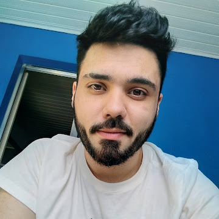

ESZA019-17SA - Visão Computacional
Equipe de Laboratório
Membros do Grupo
Diego Aoyagi de Souza
27 anos, estudante de Engenharia de Instrumentação, Automação e Robótica e um cara cristão que deseja se formar

Gabriel Gomes de Oliveira
29 anos, estudante de Engenharia de Instrumentação, Automação e Robótica

Gustavo Cardoso Bezerra
26 anos, estudante de Engenharia de Instrumentação, Automação e Robótica

Todos juntos

Nossos Avatares